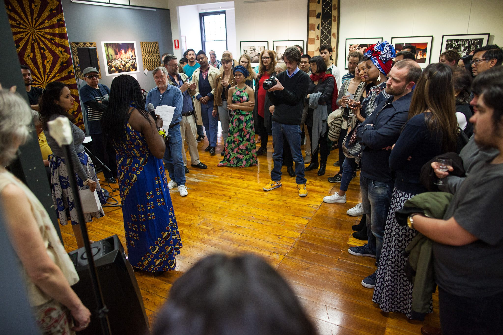
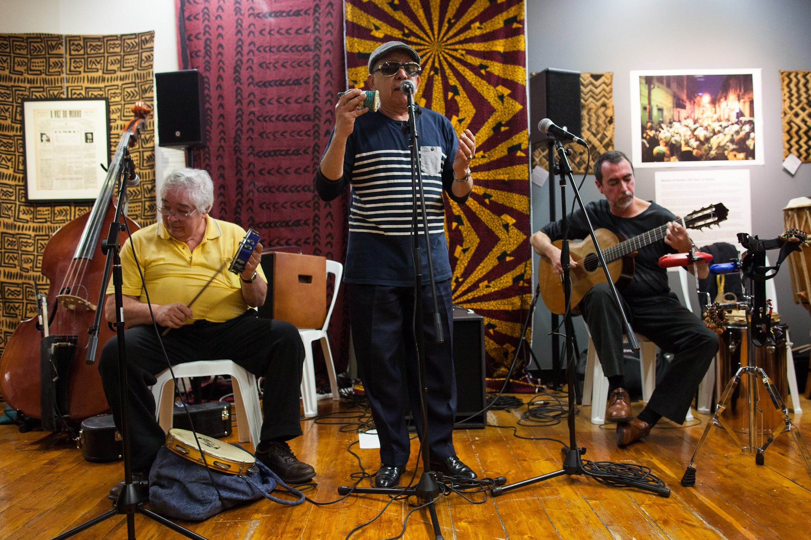
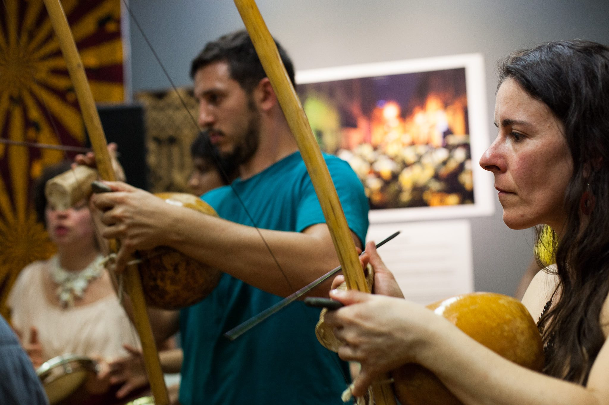
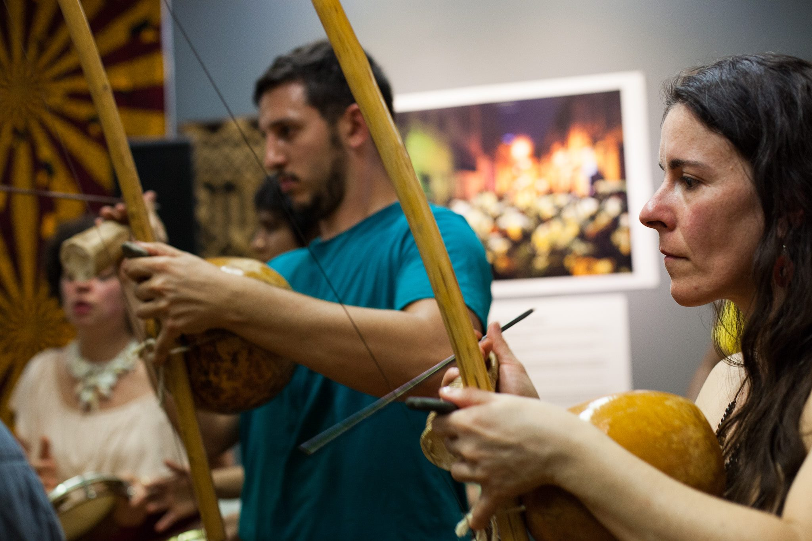

About
Perspectiva is a living exhibition that invites you to travel on the journey of a life model
Through two art installations and live performances you will have a taste of the view of the viewed
Like Milton Santos, the Afro-Brazilian geographer, I believe that the fundamental role of contemporary art is to boost what he conceptualized as ‘Another Globalization’. Globalize knowledge and its use. In the network of human relations and geographic spaces, value the singular amidst the totality. Solidarity gave birth to Samba, and Samba gives birth to Solidarity.
In 2018 the theme was SAVE THE BRAZILIAN AMAZON. It is a direct manifesto of keeping the lush forests in our wetlands or not. The name of an entire nation can not only be associated with a type of complete hair removal in the pussy and in the hoof.
Everyone has hair and everything is beautiful and wonderful. Let's protect our forests! Bring your instruments, drinks and costumes! Call your friends. We are bringing a big cooler but feel free to bring more!
Womb of Samba
Samba was born in “Pequena África”, a neighbourhood surrounding the wharf of Valongo, through which close to 2 million enslaved Africans entered Rio de Janeiro. Specifically, Samba was born in the house of Tio Ciata of Oshun (Hilária Batista de Almeida) who arrived in Rio de Janeiro from Bahia in 1876 at the age of 22.
´Pelo Telefone’, was the first samba song to be recorded, in 1916 by Donga. It was composed in Tia Ciata´s
Cast and Creatives
Artist Exhibiting - Anita Ekman
Guest Artist (African textiles) - Watiri Boylen
Curator - Anita Ekman
Concept - Anita Ekman & Julia Calasso
Artistic Director - Julia Calasso
Producers - Anita Ekman & Julia Calasso
Photographer - Mariane Gonçalves
Singers & Musicians - Luciana Carvalho, Laura Souza, Julia Calasso, Juliana Tenucci, Lalita Ramona, Fernanda Vilela, Jairo Nascimento, Nelson Cardoso, Luiz Sasson, Marcelo Garcia, Damiano Ospina, Stefano Vespucci, João Oliveira, Tiago Ucella, Igor Delagrave
Special Thanks to the Magnet's family and friends - Michael Silver, Susanne Silver, Daniel Silver, Gary Chan. Thank you for the Capoeira community in Melbourne and Freg J. Stokes
  
